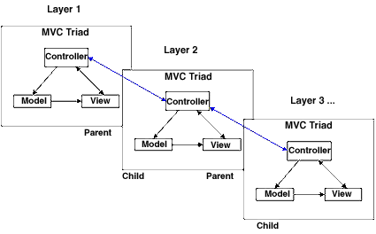
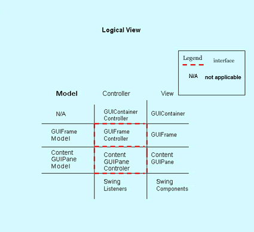
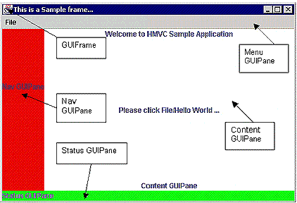
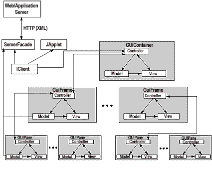
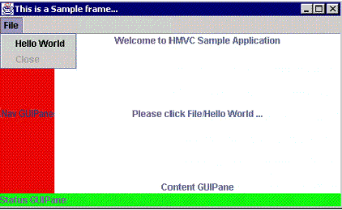
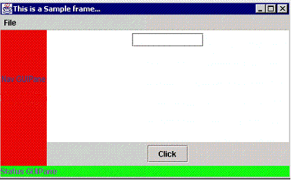
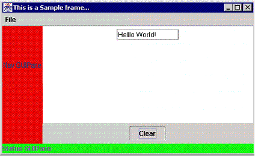

| |||
|
SummaryBy Jason Cai, Ranjit Kapila, and Gaurav Pal
Creating the client tier of an n-tier Web architecture is extremely time-consuming, with an immense chance for error. In this article, Jason Cai, Ranjit Kapila, and Gaurav Pal explain HMVC -- an industrial-strength design pattern that can significantly lower the risks and costs associated with developing a Java-based client tier. The authors outline HMVC's design philosophy and some key aspects of it; they also provide a lucid example of how you can apply it. HMVC is applicable to both Java applets and applications; indeed, any object-oriented language could take advantage of this architecture. (3,000 words)
he task of designing and developing the client tier of an n-tier Web architecture often challenges developers. This is particularly true in the Web world, where the sheer variety of servers, deployment platforms, and protocols turns the challenge into a headache. A client-tier architect must address a number of questions:
In order to understand some of these key issues, we must differentiate
between the presentation layer (or client tier) and the
GUI layer. The GUI layer deals with a small subset of the whole
presentation layer, namely the UI widgets and the immediate effects of user
actions -- a JTextField and its ActionListener, for
example. The presentation layer needs to deal with application flows and server
interaction in addition to providing GUI services. The terms presentation
layer and client tier are used interchangeably in this article.
Framework-based approach
To
mitigate the risk associated with creating a robust client tier, developers have
produced several frameworks and design patterns with varying degrees of success.
The Model-View-Controller (MVC) paradigm remains one of the more enduring
patterns. However, the traditional MVC scope falls short when it comes to the
control of GUI elements (widgets). MVC does not handle the complexities of data
management, event management, and application flows. As an adaptation of the MVC
triad, the HMVC -- Hierarchical-Model-View-Controller -- paradigm seeks to
redress some of the above-mentioned issues. We developed this pattern during the
course of our work in the field. HMVC provides a powerful yet easy-to-understand
layered design methodology for developing a complete presentation layer. While
MVC provides an efficient framework for developing GUI interaction, HMVC scales
it to the entire client tier. Some key benefits of a responsibility-based,
layered architecture include:
This article explores the application of the HMVC design pattern in the development of a Java-based client-tier infrastructure.
Note: The entire source code for this article can be downloaded as a zip file from the Resources section below.
Model view controller -- MVC
Developers primarily use MVC in Smalltalk for implementing
GUI objects. Numerous GUI class libraries and application frameworks have reused
and adopted the pattern. As the MVC paradigm offers an elegant and simple means
for solving UI-related problems in an object-oriented way, its popularity is
justified. MVC provides clearly defined roles and responsibilities for its three
constituent elements -- model, view, and controller. The view manages
the screen layout -- that is, what the user interacts with and sees on the
screen. The model represents the data underlying the object -- for
example, the on-off state of a check box or the text string from a text field.
Events cause the data in the model to change. The controller determines
how the user interacts with the view in the form of commands.
Layered MVC -- HMVC
The HMVC
pattern decomposes the client tier into a hierarchy of parent-child MVC layers.
The repetitive application of this pattern allows for a structured client-tier
architecture, as shown in Figure 1.
|
 Figure 1. MVC layers |
The layered MVC approach assembles a fairly complex client tier. Some of the key benefits of using HMVC reveal the benefits of object orientation. An optimally layered architecture:
Use HMVC to design a client-tier architecture
Though you may find the task daunting, you can effectively
manage the development of a presentation layer for an application by
incorporating smart development into your strategy -- that is, by using a robust
and scalable pattern that can reduce some of the risk and provide a ready-made
design foundation on which to build.
There are three key aspects of client-tier development:
The HMVC design pattern encourages the decomposition of the client tier into developed, distinct layers for implementing GUI and application services. A pattern-based architecture results in standardization; the HMVC pattern standardizes the presentation (user-service) layer of Web applications. Standardization in the presentation layer helps contribute to:
Design principles
The HMVC pattern
provides clear delineation of responsibility among the different components and
layers. Standard design patterns (Abstract Factories, Composite, Chain of
Responsibility, Facade, etc.) can be used to provide a stable design.
|
 Figure 2. HMVC layers and components |
Figure 2 illustrates some layers and key components of the HMVC pattern. The
horizontal layers specify the hierarchy within the application; the vertical
slices refer to the components of the MVC triad. Within a layer, the controller
has the overall responsibility of managing the model and view components. For
example, the GUIFrame Controller controls the GUIFrame Model and the GUIFrame
(the view). The dashed lines between model, controller, and view within a layer
signifies clearly defined interfaces for communication. This interaction is
achieved through AppEvents. For intralayer communication, a
parent-child controller hierarchy exists, and all intralayer communication can
only be routed through this path. Controllers interact by means of
AppEvents.
View
A user interacts with the view, the visible portion
of the application. HMVC abstracts views at different levels to provide a clean
method for designing the GUI. At the highest level is a GUIContainer, with its
associated controller. The container essentially holds potentially multiple
views, called GUIFrame(s); each GUIFrame is a visual entity with which a user
interacts. The framework defines a GUIFrame as composed of multiple subparts --
that is, a Menu GUIPane, a Navigation GUIPane, Status GUIPane, and a central
Content GUIPane (see Figure 3). In most common Web applications, developers
usually expect multiple GUIFrames to be unlikely; primarily, it is the Content
GUIPane that needs to change. The Content GUIPane area is considered to be the
most important part of the GUIFrame; that's where most of the user interaction
occurs. The framework assumes that the efficient control of multiple Content
GUIPanes will suffice to deliver a very large part of the user experience.
|
 Figure 3. GUI components |
Figure 3 illustrates a typical GUI frontend. It breaks into several parts (i.e., GUIPanes). We can apply the MVC triad to each of the composing panes and establish a hierarchy, with the GUIFrame being composed of the Menu, Status, Nav, and Content GUIPanes. Depending on the complexity of the code within each component, we may or may not assign an independent controller and model to a GUIPane. For example, because of its simplicity and lack of any real need for sophisticated control, it is not necessary for the Status GUIPane to have its own controller; we may choose to have the GUIFrame controller run the Status GUIPane instead. However, as the Content GUIPane is an important activity area, we might assign it a separate controller and model. Based on the MVC triad, a GUIFrame has its associated controller and data-holder model, as does the Content GUIPane. The GUIFrame layer has the GUIContainer as its parent triad. The GUIContainer is an invisible part of the architecture; it can potentially hold multiple GUIFrames.
A crucial aspect of the design is the isolation of Swing-specific code --
i.e., the Swing components and their listeners (refer back to Figure 2) --
within the lowest rung of the hierarchy. As an illustration, Swing widgets
primarily compose the Content GUIPane. This is not a design limitation; a Nav
GUIPane could also have a Swing component like, for example, a
JTree. Therefore, the Content GUIPane is also responsible for
catering to Swing events like ActionEvents. Similarly, an
ActionEvent generated by clicking a JMenuItem within
the Menu GUIPane is heard by the Menu GUIPane itself. Thus, a GUIPane acts as a
listener for Swing events. The affected GUIPane can subsequently request further
service from its controller by using application-level events. This allows for
the localization of Swing-specific code.
Controller
The controller uses the model to coordinate
the effects of user events on the view with the model; it also caters to logic
flow. HMVC defines layers within the GUI and provides for distributed control of
events through a parent-child hierarchy of controllers. Within a layer, the
controller is the supreme commander, orchestrating the application flows and
user-event responses. The Chain of Responsibility design pattern implements the
controllers, wherein they pass on events that they can't cater to.
For example, if, as a result of clicking a button within a Content GUIPane,
the Menu GUIPane needs to change, then the ActionEvent would be
intercepted by the Content GUIPane itself (as it is the listener for Swing/AWT
events). The ContentGUIPane would subsequently make a navigation request to the
ContentGUIPane controller, which would, in turn, pass it on to its parent
controller, the GUIFrame controller. This results because the change in the Menu
GUIPane can be effected only at a higher level, as the Content GUIPane and Menu
GUIPane are at the same level in the hierarchy (they are both contained within a
GUIFrame).
Parent-child relationship
An absolute and clearly defined
parent-child relationship is established between a GUIContainer controller at
the topmost, or parent, level and its child, the GUIFrame controller. Similarly,
there is a parent-child relationship between a GUIFrame controller and a
GUIContent Pane controller. The controller within each layer is only responsible
for actions limited to its sphere of influence -- that is, the model and view at
that level. For all other services, the controller needs to pass actions on to
its parent.
Communication
If a controller can't handle its event, the Chain
of Responsibility pattern signals the controller to pass the event to its
parent. Controllers communicate with each other via AppEvents --
which typically can be navigation events, data-request events, or status events.
Navigation events are typically those that change the look and feel of the view.
For example, if you click the JMenuItem within the Menu GUIPane --
which replaces the active Content GUIPane -- the navigation event would make the
change. The application developer would need to identify these events and create
some basic stereotypes.
Controllers can also communicate via data events. If a Content GUIPane needs
to display data in some JTextField objects, then the Content
GUIPane would create a data event. The Content GUIPane would then pass it to its
controller, which, upon determining that it is a data event, would delegate it
to the associated model. The model subsequently would pass a refresh request to
the Content GUIPane, which would deliver a clean and well-defined communication
path.
Responsibility
The controller has multiple responsibilities; it
must respond to application-level navigation events and data-request events, for
instance. In response to navigation events, a controller provides
application-flow logic -- changing screens or disabling/enabling options, for
example. For data-request events, the controller delegates the request to an
associated model object.
Model
View entities like GUIContainer, GUIFrame(s), and
GUIContent Pane(s) have associated models. HMVC makes a provision for models at
every layer of the hierarchy, but it is up to the application designer to
actually implement them. The GUIContainer model typically contains data or
information that affects the whole application, while the GUIFrame model
contains information related only to the state of a GUIFrame. The model contains
or holds the data objects that are to be displayed or worked upon in a view.
Typically, the model receives a delegated data-service request from the
controller, fetches the data, and notifies the associated view of the
availability of fresh data.
The model encapsulates key server-interaction functionality to retrieve data. To accomplish this task, key issues -- SQL requests, data element-mapping between GUI and databases, transport data formats, etc. -- need to be redressed. Design issues, like data-persistence mechanisms in the model need to be ironed out. However, in most thin-client architectures, the role of the model tends to be that of a data conduit that hides the complexity of data fetching and decouples the rest of the client tier from server-side data formats.
Let's go for a spin
A simple
example will help you grasp key concepts.
|
 Figure 4. HMVC client tier instance diagram |
Figure 4 illustrates an instance diagram of a client tier, with some of its
key components and layers. As explained earlier, the hierarchy of MVC triads for
GUIContainers, GUIFrames, and GUIPanes are apparent in this diagram. The model
classes in each MVC layer encapsulate the details of the data formats and are
responsible for interacting with the ServerFacade to satisfy data
requests. The server-side and transport-specific format is mapped to this data
format, thereby decoupling the application data formats from its GUI
representation.
The Hello World application
In our sample application,
we will try to see how the HMVC makes sense in crafting a robust client tier.
Our application consists of a GUIContainer, the highest MVC triad,
consisting of GUIContainerController,
GUIContainerModel, and GUIContainer. The
GUIContainer is a nonvisual view; it simply provides services to
the contained GUIPanes.
In terms of importance within the triad, the controller is assumed to be at a
higher level of responsibility than the model and view. It is their gatekeeper;
the controller has references to the model and view.
GUIFrameController, GUIFrame, and
GUIFrameModel compose the second rung. A collection of GUIPanes
(see Figure 2), namely MenuGUIPane, StatusGUIPane,
NavGUIPane, and ContentGUIPane, make up the
GUIFrame. Since the GUIPanes are fairly trivial
(ContentGUIPane excepted), they don't have their own controller.
Instead, the GUIFrameController controls them. Your needs may be
different, however, and each GUIPane could have its own triad if necessary.
We must distinguish between an HMVC controller and a Swing listener. In order
to isolate Swing code, each GUIPane by itself deals with Swing events. For
example, look at the class definition of the MenuGUIPane:
public class MenuGUIPane extends javax.swing.JMenuBar implements
ActionListener
|
 Figure 5. Sample application screenshot |
Thus, the MenuGUIPane listens for the ActionEvent
generated when a user clicks the File, Hello World menu item (Figure 5). The
MenuGUIPane then determines what service it wants from its
controller, the GUIFrameController. In our particular example, the
ActionEvent replaces the ContentGUIPane, so a
navigation service is expected. The code snippet below illustrates the creation
of the navigation AppEvent object and its transmission to the
GUIFrameController (ctlr_).
public class MenuGUIPane ...
{
...
public void actionPerformed(ActionEvent
actionEvent)
{
if(actionEvent.getActionCommand().equals("HELLO"))
{
...
AppEvent ae = new
AppEvent(AppEvent.NAV_EVENT);
ae.setMessage("SHOW_HELLO_WORLD");
ctlr_.handleAppEvent(ae);
}
else
if(actionEvent.getActionCommand().equals("CLOSE"))
System.exit(0);
}
...
}
Upon receiving the AppEvent, GUIFrameController
knows what to do in the case of a navigation event. (Our example is fairly
trivial, meant to show key behavior and components. In an actual application,
more would need to be done!) It creates a new child MVC triad composed of the
ContentGUIController, ContentGUIPane, and the
ContentGUIPaneModel, and establishes the parent-child hierarchy
structure.
public class GUIFrameController ...
{
...
public void handleAppEvent(AppEvent ae)
{
if(ae.getMessage().equals("SHOW_HELLO_WORLD"))
{
createChildTriad();
childCtlr_.init();
}
}
...
public void
createChildTriad()
{
ContentGUIPane contentPane = new
ContentGUIPane(new
Dimension(20,20));
ContentGUIPaneModel
contentModel = new
ContentGUIPaneModel();
ContentGUIPaneController
contentController = new
ContentGUIPaneController();
contentController.setView(contentPane);
contentController.setModel(contentModel);
contentController.setParentController(this);
setChildController(contentController);
view_.setPane(contentPane);
}
}
|
 Figure 6. Sample application screenshot |
Figure 6 shows the resulting GUIFrame. In order to further illustrate some key concepts behind the responsibility-based controller hierarchy and MVC interaction, let us take a look at intralayer communication like retrieving data -- data-event handling, in other words.
|
 Figure 7. Sample application screenshot |
Upon clicking the Click button, the text "Hello World!" appears in the
TextField, as in Figure 7. The mechanism for achieving this is
similar to what transpired in the MenuGUIPane actionPerformed()
method. However, this time, instead of a navigation service, the
ContentGUIPane controller requests a data service.
public class ContentGUIPane ...
{
...
public void actionPerformed(ActionEvent
ae)
{
if(ae.getActionCommand().equals("CLICK"))
{
...
AppEvent ape = new
AppEvent(AppEvent.DATA_EVENT);
ape.setMessage("HELLO_WORLD");
ctlr_.handleAppEvent(ape);
}
...
}
...
}
The ContentGUIPaneController simply delegates a data-service
event to its associated model object; status-event or navigation-event service
would be passed on to its parent controller, the
GUIFrameController. This establishes a clear chain of
responsibility for the controllers. They deal only with events that are within
their scope and defer other events to their parents.
public class ContentGUIPaneController...
{
...
public void handleAppEvent(AppEvent evt)
{
if(evt.isDataEvent())
contentModel_.handleAppEvent(evt);
else
if(evt.isStatusEvent()
|| evt.isNavEvent())
parentCtlr_.handleAppEvent(evt);
}
...
}
Upon receiving the data-service event, the ContentGUIPaneModel
would engage the ServerFacade to retrieve data and subsequently
request the associated view to refresh itself. (The ServerFacade is
not implemented in the example as it is out of this article's scope.)
public class ContentGUIPaneModel ...
{
...
public void handleAppEvent(Sample.controller.AppEvent
ae)
{
String[] stra = new
String[1];
// stra =
ServerFacade.getData(xyz...);
stra[0] =
"Hello
World!";
contentPane_.refreshView(stra);
}
...
}
The associated view, the ContentGUIPane, then displays the data
in the appropriate widget.
public class ContentGUIPane ...
{
...
public void refreshView(String[] data)
{
txtMsg_.setText(data[0]);
validate();
}
...
}
Conclusion and further work
The
example presented here skips issues like data management, data formats, advanced
controller, and view management. Our objective here has been to present a
scalable and robust design pattern that you can use to create a client tier in
Java.
The ability to handle multiple GUIFrames and Content GUIPanes would also need to be included in any eventual solution. A composite pattern that models server-side data can handle the missing data format part. Issues like data persistence and SQL query generation, along with database and UI data maps, will need to be redressed.
Currently, we are working on putting together a client-tier framework in Java that leverages the HMVC pattern and hopefully assists the client-tier architect in using an out-of-the-box solution that significantly reduces development time and risk.
About the author
Jason
Cai is a consultant with RDA, and has over 10 years of
software-development experience. He is a Sun-certified Java 2 architect,
developer, and programmer; he also is an MCSD and MCSE, and has an MS in
electronic engineering and statistics. Ranjit
Kapila is a consultant with RDA. He has BS and MS degrees in
computer science, with over seven years of software development experience. He
is a Sun-certified Java 2 programmer in addition to having extensive
object-oriented experience in C++. Gaurav
Pal is a consultant with RDA. He has a BS in computer
science with six years of software-development experience, including over three
years in Java. He is a Sun-certified Java 1.1 and 2 programmer and has written
extensively for publications like IEEE Potentials and Computer
Communications UK.
|
|
Copyright © 2002 JavaWorld.com, an IDG Communications company |
|